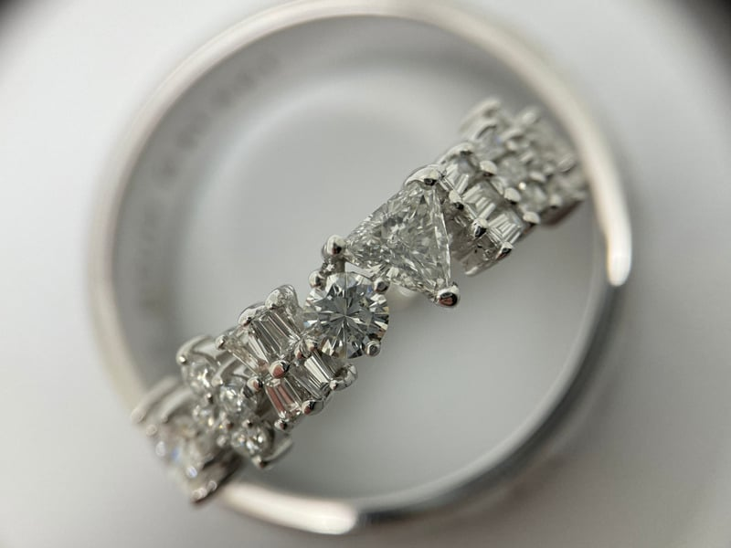

Brand Knowledge
OneLove Jewelry berdiri pada 20 February 2017.
OneLove memproduksi berbagai
macam perhiasan emas dan berlian.
Sebelumnya, selama 10 tahun kami menggunakan nama AGL jewellery
Selama ini produksi perhiasan OneLove
didominasi wedding ring.
OneLove proses produksi memakan
waktu 4-5 minggu dari di-acc nya design
oleh client dan down payment.
Saat ini OneLove store akan pindah dari PTC Mall It UG ke Ciputra
World Mall It 1. Instagram
Instagram OneLove: @onelove.jewelry